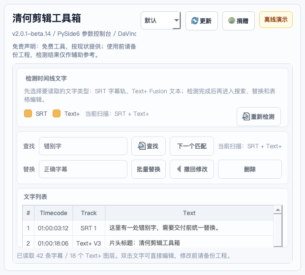
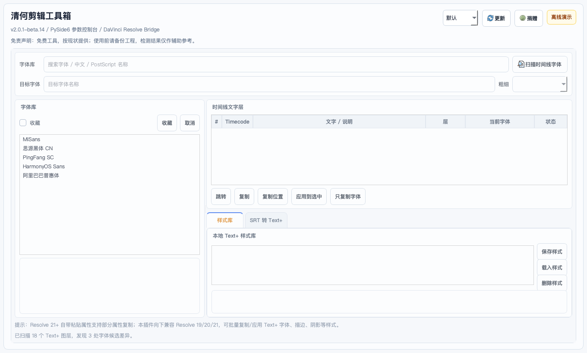

画面质检
黑帧、夹帧、卡帧、重复帧、异常画面统一检查，并按风险自动打标。


最新版界面
主面板负责检测，字幕第二窗口负责快速改字，字体小窗负责 Text+ 样式复核。滚动时界面会随章节切换，就像把一次交付检查拆成几个清晰步骤。
功能覆盖
黑帧、夹帧、卡帧、重复帧、异常画面统一检查，并按风险自动打标。
辅助检查声道和静音问题，让导出前的最后一遍更有依据。
围绕 Text+、字幕模板和字体样式做整理，适合包装、短剧和批量项目。
检测结果写回 Resolve 时间线，复核路径直接落在你的工作现场。
安装方法
当前 macOS 公开包未做 Apple Developer 公证。首次打开时请右键运行安装脚本， 安装完成后重启 DaVinci Resolve。
下载
macOS 版已发布 DMG 一键安装包。Windows 版上传后会放在这里；百度网盘目录作为国内备用入口，方便同时放 macOS 和 Windows 文件。
适合 macOS 用户。打开 DMG 后右键运行“① 一键安装.command”。
SHA256: 72ddb6a588e3b936a9489df1c47e40c7d4188076a015bf32466797c8a68f39dd
Windows 版会单独打包测试。上传后这里会放 Windows 直链和校验值。
用于放置 macOS / Windows 安装文件，国内用户下载不稳定时优先看这里。
本工具按“现状”提供，检测结果仅作辅助参考，不保证 100% 找出所有问题。 使用者应自行评估适用性，并在使用前做好项目备份。
工具不应上传工程文件、素材文件或完整时间线内容。匿名统计仅用于版本、平台和功能使用情况分析。